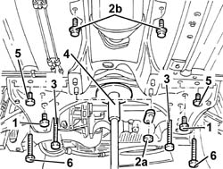
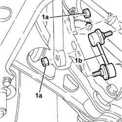
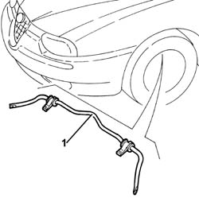
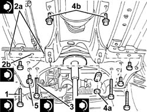

4410C10 front suspension stabilizer bar - r+r - check wheel geometry separately
- Path
- Procedures > 44 SUSPENSION AND WHEELS > 4410 FRONT SUSPENSION > 4410C stabilizer bar and anchorage struts > 4410C10 front suspension stabilizer bar - r+r - check wheel geometry separately
- Kind
- repair procedure (removal / refitting; the operation number is the code)
- Applies to
- all engines; all production periods
- Interactive page
- https://sloeber94.github.io/elrnDB-a156/en/#/3238189
Applies to: all engines; all production periods
 Removing
Removing
 Refitting
RefittingPosition the vehicle on the ramp.
4450B12 front or rear wheels (two) - r+r
7055B64 Engine compartment DUST shield in front wheel arch (one), left or right - R.R.
1076B50 exhaust pipe attachment to engine - r + r
Proceed with the removal 1008A44 rear rigid mount - r r bearing in mind that there is a different set of specific operations for each version.
1. Undo the bolts securing the anti-roll bar to the front suspension crossmember.
2. Undo the bolts (2a) and the nuts (2b) fixing the gear lever and handbrake lever mount.
3. Undo the bolts fixing the power assisted steering box to the front suspension crossmember.
4. Position a hydraulic jack under the crossmember.
5. Undo the rear bolt securing the front suspension to the bodyshell.
6. Undo the side bolts securing the front suspension to the bodyshell.
Lower the hydraulic jack with the front suspension beam as necessary.

Applies to: all engines; all production periods
1. Undo the nuts (1a) and remove the joints (1b).

Applies to: all engines; all production periods
Lower the front suspension crossmember further leaving it secured only to the track control arms.
1. Remove the anti-roll bar assembly.

Applies to: all engines; all production periods
Refitting
RemovingPlace the anti-roll bar assembly back in its housing.
Raise the front suspension crossmember as necessary, then fit the joints and secure them tightening the nuts to torque.
 | Fastening | Component | Ø | Value (daNm) |
|---|---|---|---|---|
- | Nut | FRONT ANTI-ROLL BAR JOINTS | M10 | 3.8 - 4.7 |
Fully raise the front suspension beam using the hydaulic jack.
1. Tighten the side bolts securing the front suspension crossmember to the bodyshell to the recommended torque.
| Fastening | Component | Ø | Value (daNm) |
|---|---|---|---|---|
1 | Side bolt | ENGINE OR ROD ANCHORAGE BEAM | M12 | (Bodyshell side) 10.8 ÷ 13.2 |
2. Tighten the rear bolts (2a) and (2b) fixing the crossmember to the bodyshell to torque.
| Fastening | Component | Ø | Value (daNm) |
|---|---|---|---|---|
2a | Rear bolts | ENGINE OR ROD ANCHORAGE BEAM | M12 | (Bodyshell side) 10.8 ÷ 13.2 |
| Fastening | Component | Ø | Value (daNm) |
|---|---|---|---|---|
2b | Rear bolt | ENGINE OR ROD ANCHORAGE BEAM | M10 | (Bodyshell side) 8.1 ÷ 9.9 |
Remove the hydraulic jack from underneath the front suspension crossmember.
3. Tighten the bolts securing the power steering box to the front suspension crossmember to the specified torque.
| Fastening | Component | Ø | Value (daNm) |
|---|---|---|---|---|
3 | Bolt | POWER STEERING BOX | M14 | 11.0 - 13.6 |
4. Tighten the nuts (4a) and bolts (4b) for the gear lever and handbrake lever mounting.
5. Tighten the bolts securing the anti-roll bar to the front suspension crossmember to torque.
| Fastening | Component | Ø | Value (daNm) |
|---|---|---|---|---|
5 | Bolt | FRONT ANTI-ROLL BAR | M8 | 2.6 - 3.2 |

Applies to: all engines; all production periods
Proceed with the refitting 1008A44 rear rigid mount - r r bearing in mind that there is a different set of specific operations for each version.
1076B50 exhaust pipe attachment to engine - r + r
7055B64 Engine compartment DUST shield in front wheel arch (one), left or right - R.R.
4450B12 front or rear wheels (two) - r+r
Remove the car from the ramps.
Topics linked from this page (4)
- 1008A44 rear rigid mount - r r
- 1076B50 exhaust pipe attachment to engine - r + r
- 4450B12 front or rear wheels (two) - r+r
- 7055B64 Engine compartment DUST shield in front wheel arch (one), left or right - R.R.